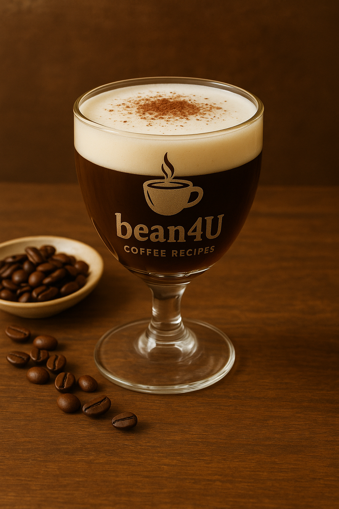

Bicerin

Ingredients
- 1 shot espresso
- Hot chocolate (thick, about 60–80 ml)
- Whole milk or cream (optional layer)
Preparation
- In a small glass, layer hot chocolate, then espresso, then a touch of milk or cream.
- Serve without stirring to appreciate the layers; stir to combine when drinking.
- youtube short quickly explaining it:
- short Explanation
Video from @turintraditions
Channel